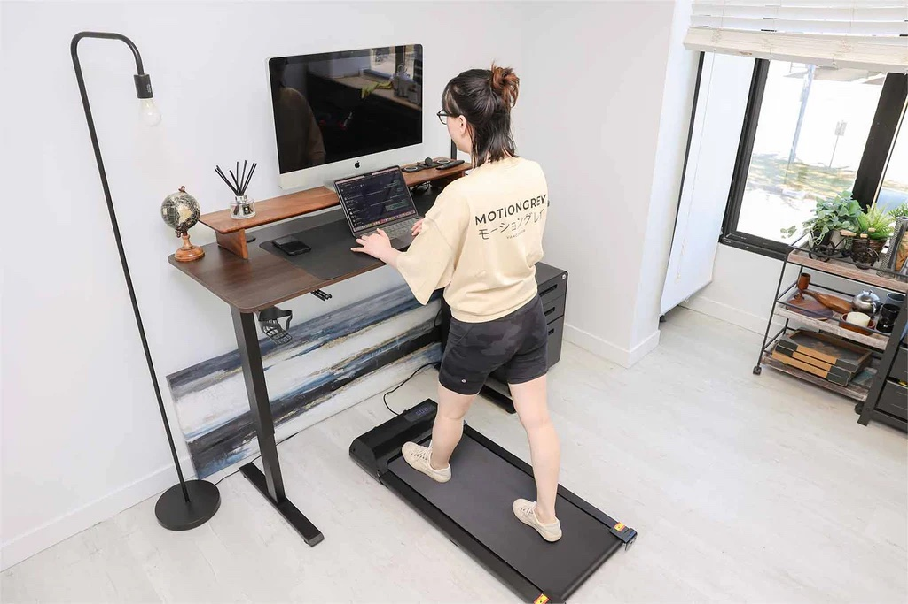
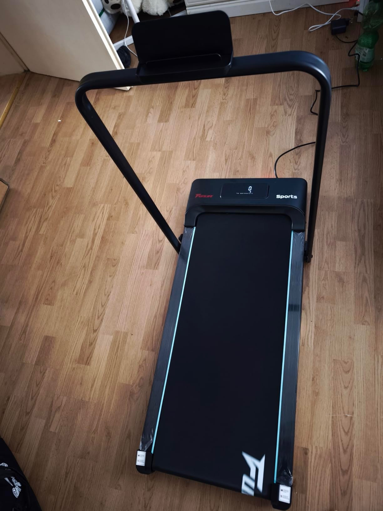
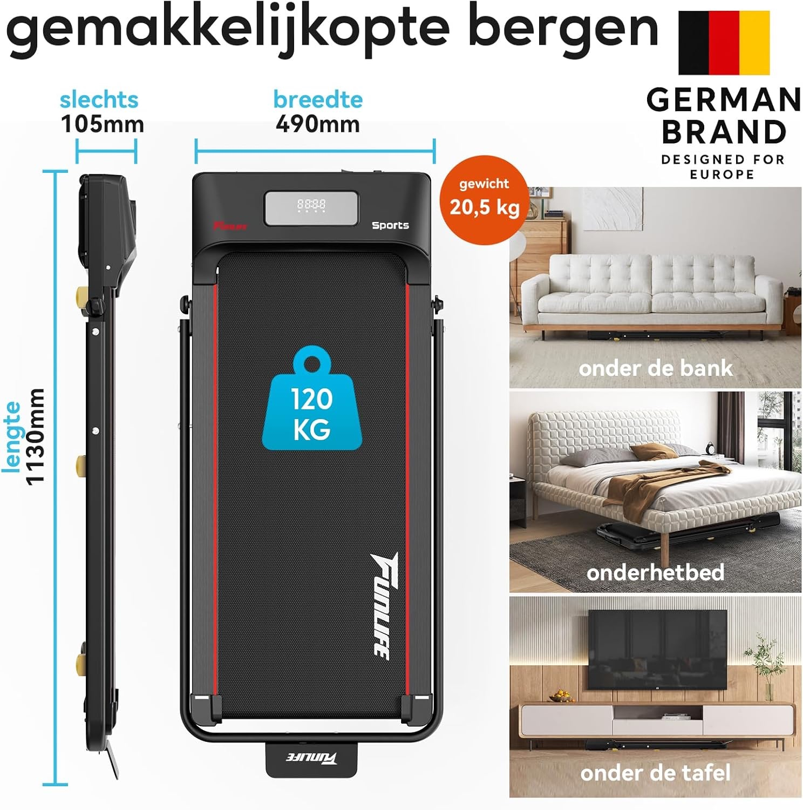

No gym. No weather excuses. Just me, my laptop, and 10,000 steps a day.

I bought this walking pad two months ago. I did not expect much. I thought it would end up in the corner collecting dust like all the other home workout stuff I had tried before. But here I am, eight weeks later, writing this while walking at 4 km an hour. And I do this every single day.
Let me tell you what changed.

I work from home. Full-time. My step count most days? Around 2,000. Maybe 3,000 if I went to the store. I had a gym membership I used maybe twice a month. I always told myself I would go after work. But after work I was tired and the idea of changing clothes, driving to the gym, working out, driving back — it just never happened.
What I needed was something simple. Something I could do while I was already working. No switching tasks. No planning around it. Just movement as part of my day, not as an extra thing I had to fit in.
I wanted to walk. While I answered emails. While I joined meetings. While I wrote reports. And I wanted it to be quiet enough that no one on my video calls would notice.
I spent weeks comparing models. Too many options. Too many reviews that all said basically the same thing. But a few details made me pick this one:

And it arrived in two days. That same week I started using it.
Week one: Strange. I felt wobbly. Typing while walking felt awkward. But I only did 20 minutes a day and kept the speed low (around 3 km per hour). By day four I stopped thinking about it. My body just adjusted.
Week two: I upped it to 40 minutes. Still at 3 km per hour. I started using it during every morning meeting. No one noticed. I was just walking and talking like normal.
Week four: I hit an hour most days. Sometimes I split it into two sessions. Morning and afternoon. Speed stayed around 3 to 4 km per hour. My step count went from 2,500 to over 8,000 without changing anything else in my day.
Week eight (now): I use it without thinking. Some days I walk for two hours total. I put on a podcast or just work in silence. My average is now over 10,000 steps a day. And I have not been to the gym once. I do not miss it.
I thought this would just help me move more. And it did. But there were other things I did not see coming:
These were not things I was looking to fix. But they got fixed anyway.
What I was spending before:
35 euros a month times 12 for a gym I barely visited.
Now I paid 149.99 euros once. And I use it every single day.
Now I easily hit 10,000 steps a day. And I do it all from home while working.Verified Amazon review
If you work from home and you keep finding that movement falls off your daily list, get this. Not tomorrow, now. You do not need the gym as a reason to get moving. You do not need extra time. You do not need workout clothes. You just turn it on, start walking, and keep doing whatever you were doing.
It took me eight weeks to realize this was the best fitness money I had ever spent. And I had paid for a gym for years that I never really used.
149.99 euros · Free shipping · Easy returns